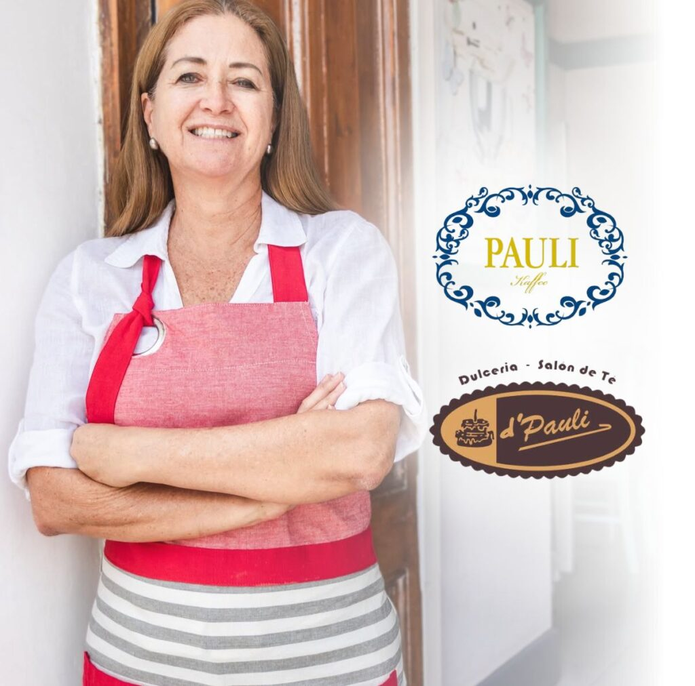

De un rincón dulce a una experiencia completa.
Todo comenzó con d’Pauli, un rincón dulce donde los postres eran los protagonistas. Con el tiempo, la pasión por crear experiencias memorables a través de la comida creció… y así nació Pauli Kaffee.
Aunque ambas marcas tienen la misma esencia —y la misma dueña—, cada una tiene su encanto único. En Pauli Kaffee encontrarás una propuesta más completa: platos salados, brunchs, opciones para el almuerzo y un delicioso tea time, sin dejar de lado los postres que tanto nos identifican en d’Pauli.
Dos conceptos, una misma historia de sabor.


«Lo que de niña era mi hobbie, ahora es mi trabajo.»Paulina Gulman, fundadora